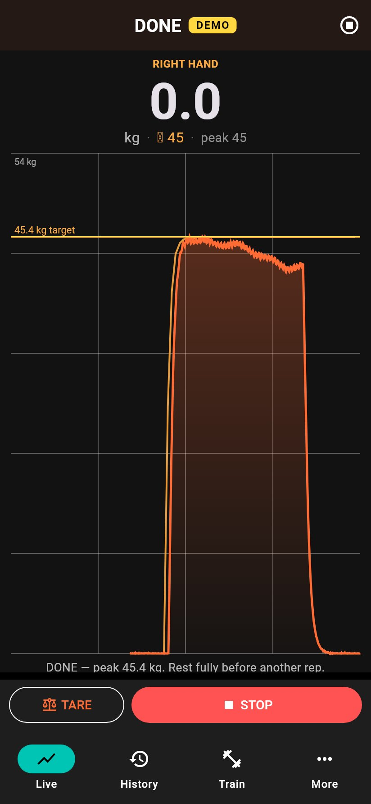
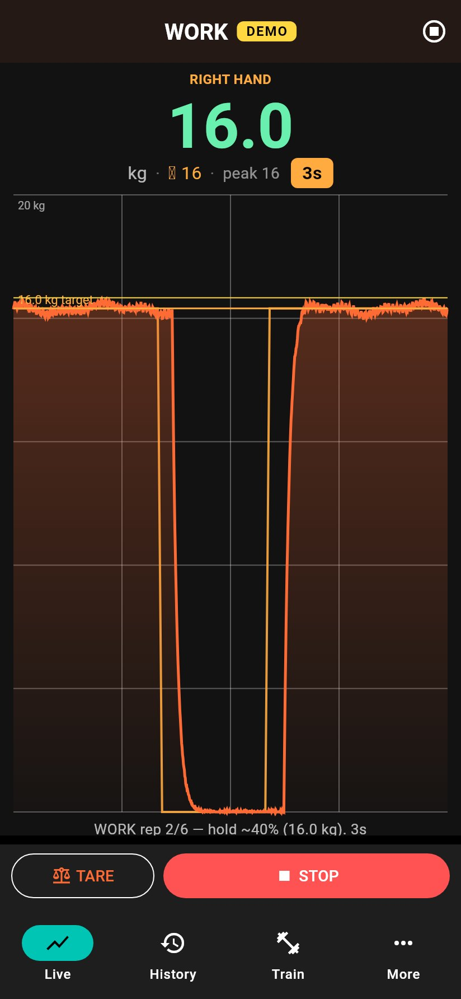
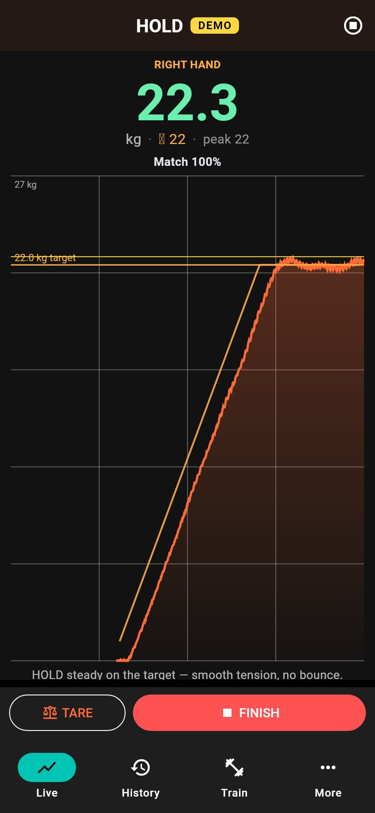
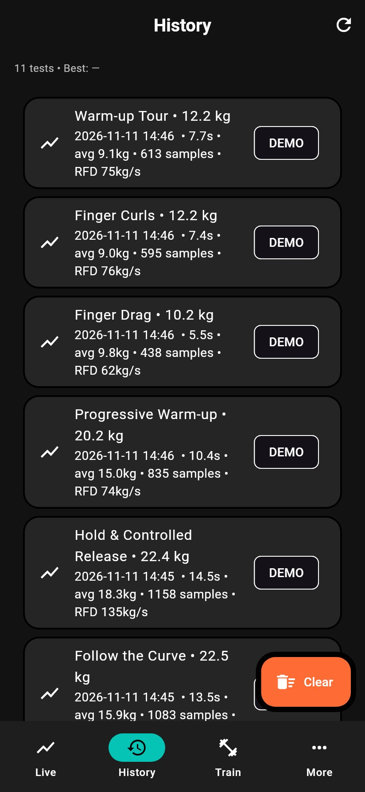
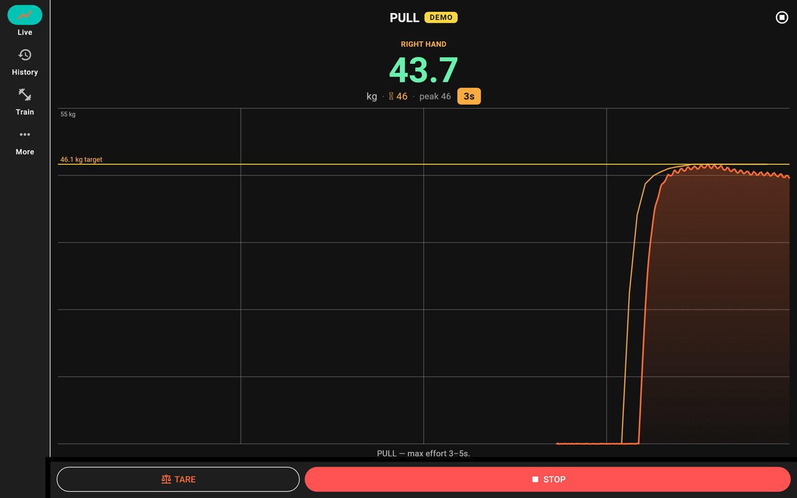

Tindeq Progressor 200 · work in progress
A personal companion for a Tindeq Progressor 200 climbing dynamometer: live force, peak and repeater tests, and guided warm-ups. The layout is still changing.
Personal, experimental software. Nothing here is a finished product, and nothing was necessarily written or reviewed by a human unless it says so. Use it at your own risk.





Current build: 0.2.101 (version code 1101), arm64-v8a.
On Android, Obtainium can install updates from a Standard JSON file. Add this URL:
https://raw.githubusercontent.com/isyourbrainfoss/Progressor/gh-pages/version.jsonAdd in Obtainium (opens the app if it is already installed).
GitHub Release asset URLs often fail on phones with “Connection closed while receiving data”. Prefer the JSON mirror above.
SHA-256: f1712b53656a077703958e1de24b8d77b85ea018279e4a244d537c4055194d52
If Obtainium reports a signing conflict, uninstall once and install again from the JSON URL.
flatpak remote-add --if-not-exists --user progressor \
https://isyourbrainfoss.github.io/Progressor/progressor.flatpakrepo
flatpak install --user progressor com.isyourbrainfoss.ProgressorThese screenshots are from the current demo-mode app. The live screen is dense, and a simpler design is planned. The page is only meant to replace the nearly empty stub that is live today.